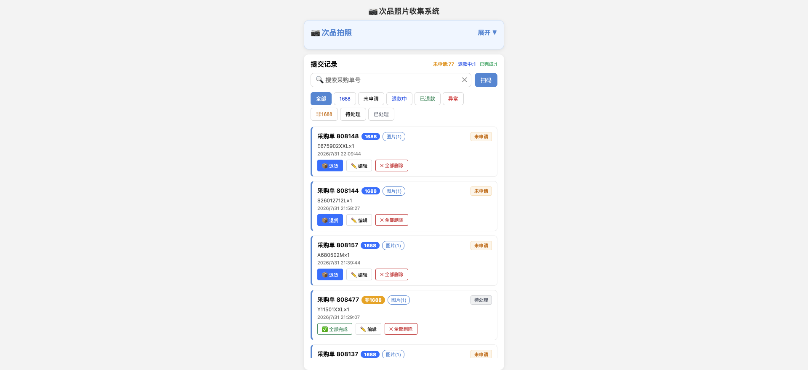
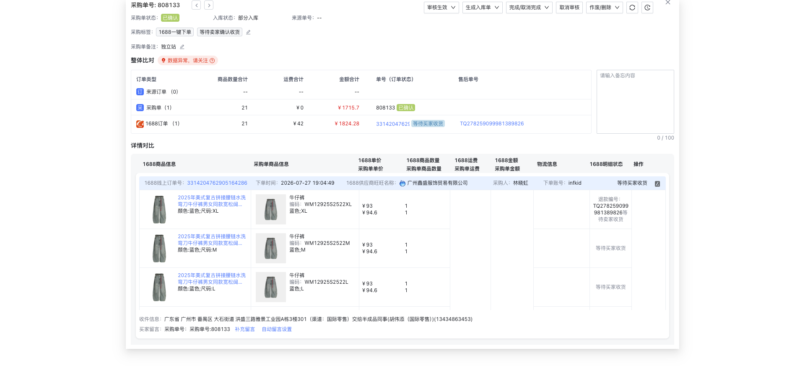

🦐 次品退款 SOP
Standard Operating Procedure · 捷展贸易 · 次品图片收集系统
一、系统定位与数据分工
| 系统 | 职责 |
|---|
| 聚水潭采购单管理 | 质检次品数量（唯一权威来源）、采购单类型识别、供应商信息 |
| 次品图片收集系统 | 收集次品图片凭证 + 退款状态追踪（不决定退款数量） |
| 1688后台 | 退款真实状态的唯一来源 |
💡 核心原则：退款数量以聚水潭质检数据为准，次品收集系统只负责图片和状态追踪。
二、操作流程
Step 1：仓库登记次品
1
仓库人员打开次品图片收集系统 → 扫码/输入采购单号 → 选择SKU和数量 → 拍照上传次品图片 → 提交登记

▲ 次品图片收集系统 — 登记界面
Step 2：系统自动识别采购单类型
2
系统自动调用聚水潭API查询采购单：
• 有1688平台订单号 → 打 1688 蓝标 → 走1688退款流程
• 无平台订单号 → 打 非1688 黄标 → 手动联系供应商处理
▲ 聚水潭 — 采购单管理列表（可查看质检次品数）
Step 3：确认退款数量（核心步骤）
3
从聚水潭采购单详情获取该SKU的质检次品数量（qc_defective_qty），扣除已在退款中/已退款的数量，得到本次应退数量。
⚠️ 前提条件：已有退款记录的状态必须先从1688后台同步更新，否则计算会出错（可能重复申请或少申请）。

▲ 聚水潭 — 1688采购单详情页（可查看订单状态和售后信息）
Step 4：提交退款申请
4
通过聚水潭ERP的1688采购单详情页提交退款：
• 勾选需要退款的SKU
• 填写退款原因、说明
• 上传次品图片作为凭证
• 提交后系统自动记录退款单号
Step 5：跟踪退款状态
5
退款提交后，定期从1688后台同步退款进度。在次品收集系统中可以看到实时状态。

▲ 1688后台 — 退款详情页（查看退款进度）
三、状态流转
1688采购单（退款流程）
正常流程：
未申请→
等待卖家同意→
等待买家退货→
等待卖家收货→
退款成功 ✅
异常流程：
未申请→
卖家拒绝 / 申请失败
非1688采购单
待处理→
已处理（手动标记）
非1688采购单由人工联系供应商协商处理
四、页面筛选Tab说明
第一行（1688相关）：
全部
1688
未申请
退款中
已退款
异常
第二行（非1688相关）：
非1688
待处理
已处理
五、关键规则
| 规则 | 说明 |
|---|
| 退款数量来源 | 聚水潭 qc_defective_qty（质检次品数），不以收集系统登记数为准 |
| 1688操作按钮 | 所有状态都显示"📦退货"跳转1688后台，无"全部完成" |
| 非1688操作按钮 | 显示"✅全部完成"手动标记，无"📦退货" |
| 同SKU多批次 | 不同批次独立追踪，不自动合并，各自显示各自状态 |
| 状态来源 | 从1688后台同步，系统不自行判断状态变化 |
| 同步前提 | 前一条退款记录状态必须先同步，才能正确计算下次退款数量 |
✅ 总结：仓库拍照登记 → 系统识别类型 → 按质检数据算退款量 → 提交退款带图片 → 同步1688状态追踪